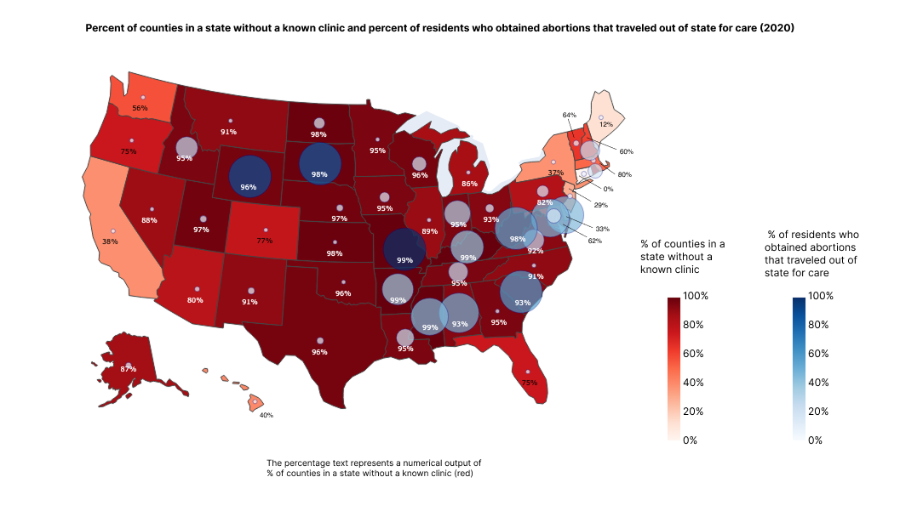
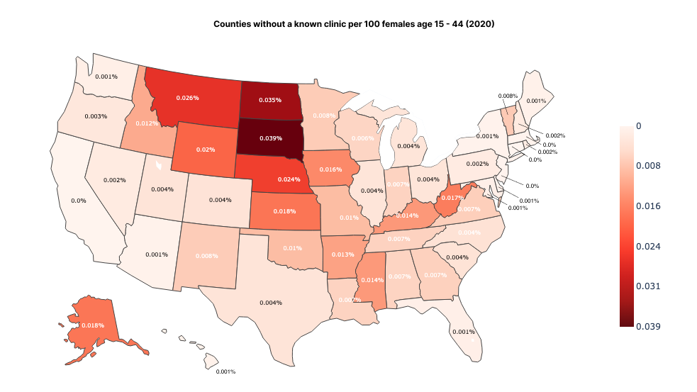
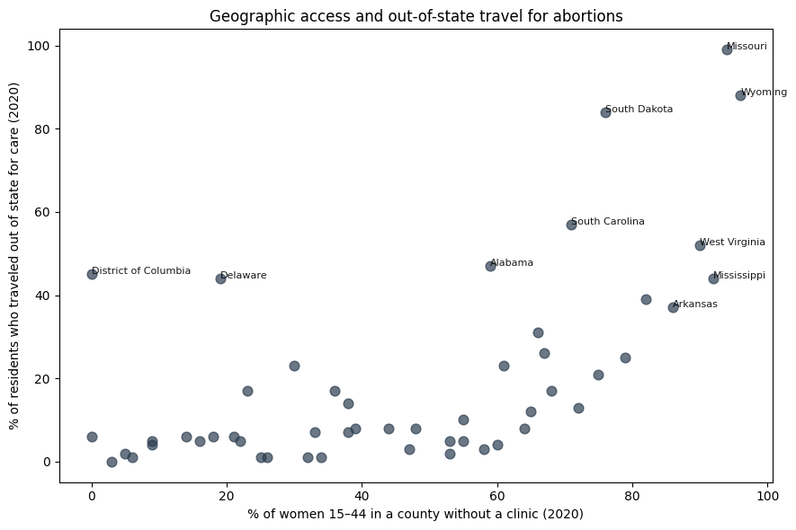
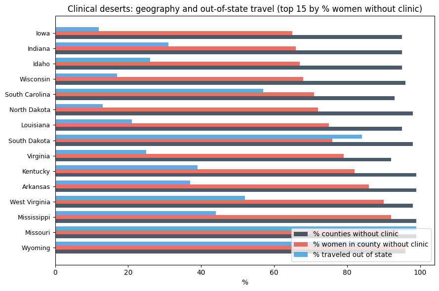
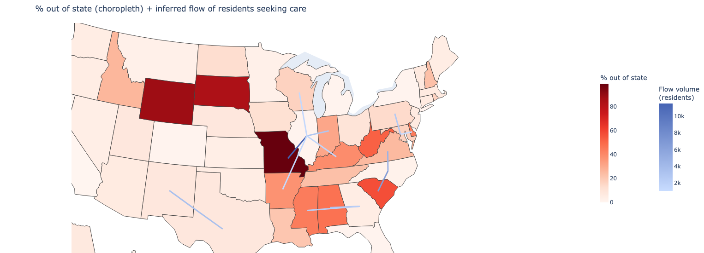
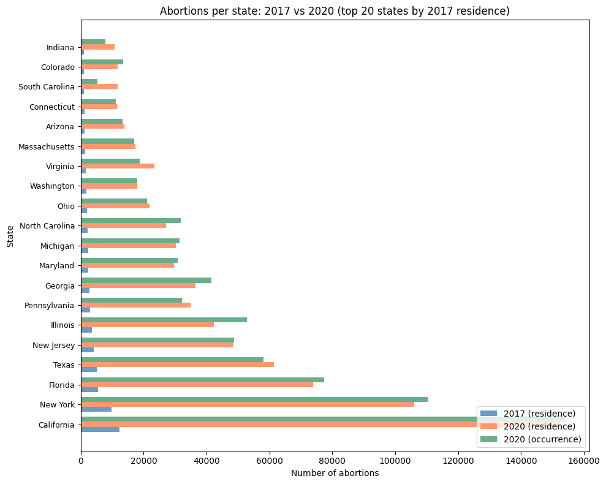
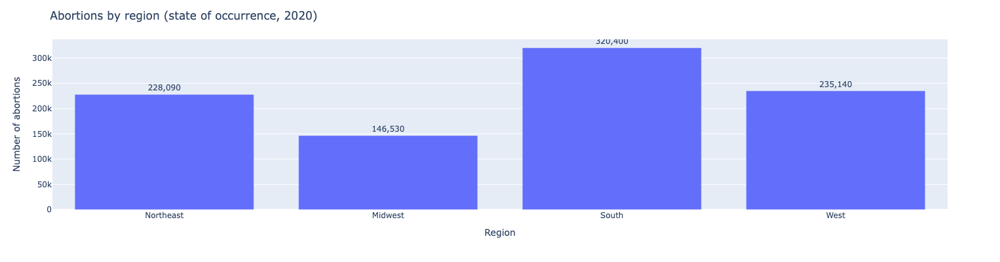
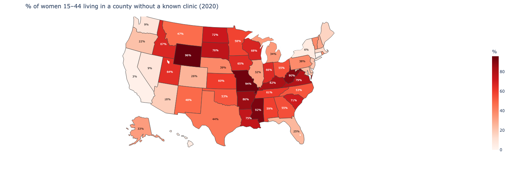

A4: Persuasive or Deceptive Visualization?
Kendall Nakai - knakai@mit.edu
Proposition
There is not enough access to abortion clinics in most of the United States
Visualization 1: FOR the Proposition

Design decisions
- 1: In looking at the
% of counties without a known clinic, 2020data in ascending to descending, I noticed an alarming majority of counties in a state don’t have a clinic, so wanted to express how widespread that was.I also noticed that states like Missouri, Wisconsin, and Kentucky that began to lack care seemed to inflow to states with more care (more being relative, by a small percentage) like Illinois.
From these observations, wanted to express two things:
- Lack of percentage of clinics in the majority of counties in the majority of states
- AND that even in states that lack clinics, females in states that lack clinics even more travel to other states for care
To do so, I used a chloropleth geographic map as a heat map to show just how many states lacked clinics, then layered a bubble to express which stateslack clinics had to travel out of state
- -2: While I chose
% of counties without a known clinic, 2020to be expressed, I think a more accurate representaton would have been% of women 15-44 living in a county without a known clinic (2020)as depicted in Exploration 7 in the Appendix. However, to be deceptive, using this metric from the dataset supports the message more. - 1: I wanted to use primary colors so when layered they create a combined color. I tried to use yellow and blue as to not imply the partisanship of red and blue, but a dark yellow ended up looking quite red in the first place so had to end up using red and blue for contrast visually. However, when it created a purple, it muddied a lot, so I changed the opacity so it was very clear when a color was very dark red, very dark blue, and light red or light blue.
- 1: The heat map is very saturated already, so I added percents to express nuance even in the higher numbers. For instance, in a state like Missouri, 99% of counties didn’t have a known clinic, or Ohio at 95% and Kentucky at 99%, and Wisconsin at 96%. However, even in a a state like Illinois, 89% of counties without a known clinic is still very high, but if everything is dark red it all feels the same without percentages shown.
- -1: Regarding the above design decision, the percentages almost look like they correlate with the bubbles that represent states where those seeking an abortion had to travel out of state for care. This muddies the numbers and makes them unclear. However, I decided to keep them in because while confusing, the high numbers still support the argument more than they hurt it, so I included a note in the key.
Visualization 2: AGAINST the Proposition

Design decisions
- -2: While I used the metric
[% of counties without a known clinic, 2020], in thinking about it more, this statistic is inherently deceptive because:- the wording of the title is unclear, without giving a definition of
abortion provideras opposed toclinic - without having also provided population data of females of pregnancy age (according to the data, 15 - 44), there is no ability to compare ratios in states so that perhaps a very small-population state with limited health clinics in the first place wouldn’t also have abortion resources
To counterbalance this, since the data is taken in 2020, that’s also a census year. I used the US census data to find how many counties were in each state. I then found
counties without clinic = (state county count) × (% without clinic) / 100. I then estimated number of females 15 - 44 in a state from theabortion rate per 1,000 women 15–44 by residenceandabortions by state of residence, 2020throughtotal females = abortions ÷ (rate/1000) = abortions × (1000/rate)Finally, to find ratio of each, I calculated
(counties without clinic / women 15–44) × 100While I originally thought this might even the scales to see the true proportionality of clinic to potential patient population, it actually muddied the numbers even more! I messed around with per 100, 1000, and 10,000 and found at any ratio it would make it seem like there are plenty of clinics, when we don't consider state population proportion to each other. Since the last visualization wasin percentages, I used percentage for this too.
- the wording of the title is unclear, without giving a definition of
- -1: In comparison to the last visual, which urges that there is widespread lack counties without clinics with the alarming amount of deep red color and the majority of percentages over
90%, this visual is meant to express that there are plenty of clinics in proportion of the number of females 15-44 who are in childbearing age in most places except for maybe the middle of the north. Most of the counties per 100 females are sub 0.001%, with the highest being 0.039%, not even a single whole percent. This is able to utilize the deceptiveness of[% of counties without a known clinic, 2020]even more. - -0.5: While the data itself uses the word
womenin the data, I usedfemale. I think this is deceptive in that it’s not he same wording as the dataset and while they imply the same idea that both are pregnancy-age, I thought it was more accurate to use female since the ability to give birth is based on sex, not gender
Final reflection
I decided to make the proposition “There is not enough access to abortion clinics in most of the United States ” because I felt like with the data given, and the largeness of the United States and vast amount of discrepancy between states, it could be true or false. It was difficult to decide what axis to focus on, how to use the percentage statistics when the original numbers to create the percent weren’t given, and how to account for population size differences without unintentionally distorting the comparison. It was straightforward to compare across all 50 states, make geographic observations once plotted, and identify regional clusters or outliers that stood apart from neighboring states.
To explore (see Appendix), I observed abortions by state, population share by abortion share, % of changes in abortion rate, out-of-state travel vs. geographic clinic availability, change in abortion rate by state, abortions over time by state, and abortion care by region overall (i.e. West, South, Midwest, Northeast). I was surprised at how much or little Roe v. Wade and local legislation impacted abortion rates in different states, for instance, some states with restrictive laws did not always have the lowest rates, and some states with more permissive legislation did not necessarily have the highest.
Before this activity, I already found it difficult to define “ethical analysis and visualization” and now I almost want to say I don’t know how to. It feels like the numbers can be strung either way, in any-which way, and without input from domain experts on both sides weighing in what these numbers mean, I don’t actually know if there’s a lot. Without context of things like education, ideal child-bearing age, how many people do or don’t want families at a certain time, and wanted or unexpected pregnancy, these numbers don’t actually mean much to me because I can only imply my own bias to them, and I don’t know what the intention or culture of each geographical area is. The bounds I can draw to “acceptable” persuasive choice is one that leads a viewer to understand a lack or surplus of a statistic, where “misleading” ones would exaggerate differences through scale manipulation, omit relevant contextual variables, or imply causal relationships that the data cannot actually support.
One final note, I realize too late the colors of red and blue can be seen as partisan. That was not my intention as the red seen as critical was my focus and blue was contrasted enough but there are better ways to do so.
Appendix: Exploration visualizations
Exploration 1

Exploration 2

Exploration 3

Exploration 4

Exploration 5
Exploration 6

Exploration 7
